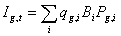
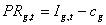
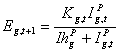
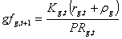
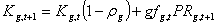

Ecosim users can specify temporal changes in fishing fleet sizes and fishing effort in three ways:
By sketching temporal patterns of effort in the model run interface;
By entering annual patterns via reference “csv” files along with historical ecological response data; and
By treating dynamics of fleet sizes and resulting fishing effort as unregulated and subject to fisher investment and operating decisions (“bionomic” dynamics, fishers as dynamic predators).
To facilitate exploration of alternative harvest regulation policies, the Ecosim default options are (1) or (2). However, users can invoke the fleet/effort dynamics model by checking the box on the Biomass form. Input parameters must be set on the Fleet size dynamics form.
When the fleet/effort response option is invoked, using the checkbox on the Ecosim Run Ecosim form, Ecosim erases all previously entered time patterns for fishing efforts and fishing rates, and replaces these with simulated values generated as each simulation proceeds. The fleet/effort dynamics simulation model uses the idea that there are two time scales of fisher response:
1) A short time response of fishing effort to potential income from fishing, within the constraints imposed by current fleet size, and
2) A longer time investment/depreciation ‘population dynamics’ for capital capacity to fish (fleet size, vessel characteristics).
These response scales are represented in Ecosim by two ‘state variables’ for each gear type g.
Eg,t is the current amount of active, searching gear (scaled to 1.0 at the Ecopath base fishing mortality rates), and Kg,t is the fleet effort capacity (Eg,t<Kg,t).
At each time step, a mean income per effort index Ig,t is calculated as

where i = ecological species or biomass group, qg,i is the catchability coefficient (possibly dependent on Bi) for species i by gear g, and Pg,i is the market price obtained per biomass of i by gear g fishers. Also, mean fleet profit rates PRg,t for fishing are calculated thus:

where cg is the cost of a unit of fishing effort for gear g (cost and price factors are entered via the Definition of fleets and Market price forms). For each time step, the “fast” effort response for the next (monthly) time step is predicted by a sigmoid function of income per effort and current fleet capacity:

Here, Ihg and p are fleet-specific response parameters. Ihg is the income level needed for half maximum effort to be deployed and p is a “heterogeneity” parameter for fishers: high p values imply all fishers “see” income opportunity similarly, while low p values imply fishers “turn on” their effort over a wide range of mean incomes, as shown in Figure 3.12.
Figure 3.12. Effect of the ‘heterogeneity’ parameter, p, on effort/income function.
Slow time reponse model
For each fleet, slow effort responses are modelled as changes in fleet capacity (Kg,t), which is a function of the capital depreciation rate ρg, the capital growth rate rg,t and profit PRg,t. The capital growth rate is calculated via a growth factor gfg,t, i.e.,

where Kg,1, ρg and rg,1 are set by the user. The annual capacity Kg,t is then updated as

.